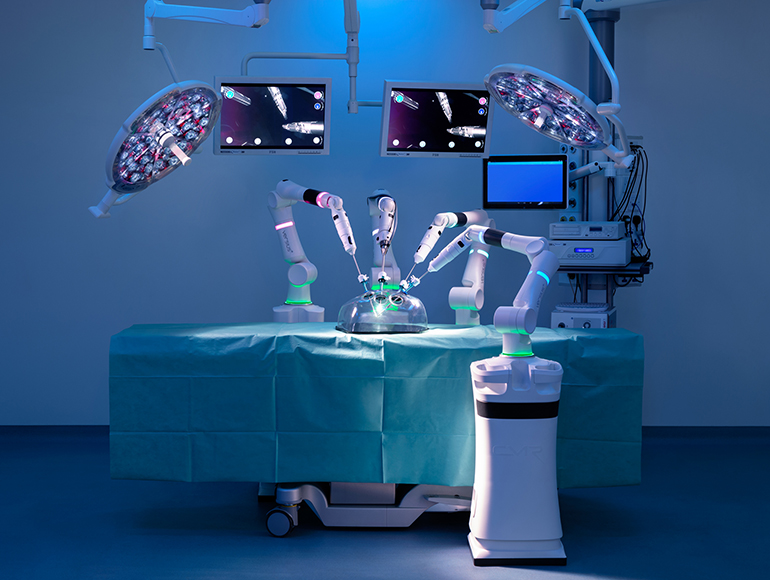

The Versius
The Versius is a next-generation robotic minimal access system. It was created by UK based med-tech company CMR Surgical and is currently said to be the world’s smallest surgical robot. It was designed to assist surgeons when performing keyhole surgery and will be used to operate on patients for the first time this year. This portable robotic system is quick and easy to set up, can be placed anywhere to suit workflow and intended to be an affordable solution for hospitals that cannot obtain existing systems due to budget limitations.

credit: cmr surgical
The systems’ software and hardware are designed and built in Cambridge, UK. Versius is made up of a surgeon console and five lightweight robotic arms. These modular arms are independent of the console. Each is individually mounted on their own carts and can be installed with one of any available surgical instruments. Its modular system allows the arms to be placed in any position around the operating system and for arms to be added or removed for each procedure. Each control unit weighs about 800 kg while each robotic arm is less than 15kg with a 38x38cm footprint. These come with a camera or any of a range of wristed 5mm surgical tools to attach. The wheels attached allow for easy mobility between operating rooms. CMR have used newer materials and technologies that did not exist twenty years ago when the first surgical robot of its kind was created.
All robotic arms are controlled by a surgeon at a console. Surgeons can sit or stand, and the console can be raised or lowered accordingly. The surgeon uses a controller with two joysticks, similar to those used for gaming, and views a visualization from within the body on a 3D high-definition screen with the 3D glasses provided. Haptic feedback is fed to the controller, allowing the user to feel the anatomy being worked on as well a comfortable visual for an intuitive experience. The console finally includes a data analysis feature. Data is stored after each operation and the information recorded about how the robot has been used can be analyzed, compared and fed back to surgeons to refine their abilities.
The robotic arms contain intelligence and sensing capabilities needed to accurately move themselves in response to a surgeon’s command, while also responding to the touch of the assisting surgical staff. Each arm has very flexible joints to imitate that of a surgeon and are designed to mimic the mechanics of the human arm in a way that industrial arms today do not. Industrial arms typically have six degrees of freedom while Versius can boast seven by adding extra joints in the arms and wrists. This is because keyhole surgery requires precision and accuracy, and also makes the device more intuitive to use for a surgeon while operating. These arms can self-monitor their position, and the force they apply 5,000 times per second to achieve such a level of precision.
The artificial intelligence in Versius is very minimal. Versius works on a slave system as it requires a surgeon to operate it, as do most surgical robots. It converts surgeon movements into instrument movements using software between remote robot arms, and a physician’s console. Artificial intelligence is however being developed to passively help the surgeon, while still leaving all decisions to be made by them. Automation is currently aimed at smoothing out hand tremors or marking out “no fly zones” to prevent a surgeon touching or damaging nearby nerves, vasculature, or organs. A robot such as this can employ weak AI that guides the surgeon without forcing their hand. However, it will be a number of years before we see an AI perform surgery itself.
Versius can be applied to a wide range of medical procedures in any hospital across the globe. It utilizes laparoscopic or keyhole surgery, which is a minimally invasive technique carried out with special instruments using very small incisions. This type of surgery is preferred over conventional surgeries as patients can expect reduced pain, less trauma, faster recovery and a shorter hospital stay. However, the techniques involved require years of training and even still the procedures remain difficult to perform. For this reason, many hospitals can only perform a limited number of laparoscopic procedures.
"It takes around 80 hours to teach suturing with manual laparoscopic tools and some surgeons find it impossible to master. By contrast, it takes half an hour to teach using Versius - this will enable many more surgeons to deliver the benefits of keyhole surgery."
- Mark Slack, co-founder of CMR Surgical and former Addenbrooke’s Hospital surgeon.
Robots have the vital accuracy, stamina, and steadiness which surgeons require to do so. It will make keyhole procedures more accessible to patients by reducing the fatigue of surgeons, possibly extending the amount of time they can operate from two hours a day to eight. Used by medical schools, this technology can also be used in teaching surgeons. Versius could also extend the working careers of aging surgeons who otherwise may not my physically able to stand for long hours or hold tools steady enough to operate. Overall this will increase the availability of qualified surgeons, making treatment more accessible to people and increasing the productivity of hospitals.
Surgical robotics is not new technology and similar robots have been available for the past twenty years. Versius was made to rival the American Da Vinci system by Intuitive Surgical, a California-based company with over 4500 units of their robot in hospitals world-wide. It is mainly used for prostate, bladder and gynaecological surgeries but the company plan to expand that list. It is a 750kg unit that allows the surgeon to sit down to watch the surgery through a scope and control the moving frameworks attached to the machine which have operating instruments attached. Its structure is very similar to Versius, however all robotic arms are attached to a singular central pillar. According to Prokar Dasgupta, Professor of Urology at King’s College London, “The surgeon could be comfortably seated and that completely changed the way we perform surgery. The da Vinci has been largely a success story.”
When first becoming available in 2000, the Da Vinci system revolutionized the med-tech industry. However, key patents for the robot have expired in the last few years and this has prompted other companies to take advantage and enter the field of surgical robotics. Alphabet joined forces with Johnson & Johnson to create a surgical robotics start-up in 2015 called Verb Surgical. Their aim is to connect their robots to each other over the internet so that they can learn from each other. They aim to launch their first robot in 2020. Medtronic also recently released their robotic spinal surgery system, Mazor X. Mazor X features a robotic guidance system for spinal surgery in addition to Medtronic's navigation and 3D imaging technologies.
CMR was first established in response to the market need for a surgical robot that is far more adaptable than those currently available and can be afforded at a much lower price. Their system was designed with the obstacles of widespread adoption of robotic MAS in mind. This includes size of the robot, instrument size, versatility, port placement, complexity, and ease of use. Overcoming these barriers allows the system to be highly utilised and cost-comparable to manual keyhole surgery. Versius is smaller than any existing surgical robot and with its modular design, it satisfies the need for portability. There is no price yet for Versius but CMR have said that they aim to make it more cost effective than the Da Vinci which is currently approximately $2 million.
When Mark Slack was originally approached by Luke Hares, another co-founder of CMR, with the idea of a surgical robot, he believed there would be no market need for a device to assist him in performing operations. However, he realized its usefulness when asked where the hardest part of being a surgeon comes from: physical fatigue. Surgeons, on average, are required to work on a patient for over an hour and this can be much longer for major surgeries. Versius was then designed to be an ergonomic tool for surgeons to tire less easily and operate on more patients but there is a larger market need for surgical robots in training surgeons.
"We’ll see the man/machine barrier changing, eventually you’ll get to the point where the surgeon can say ‘put a stitch in here please’. But we’re right at the beginning of that journey."
— Luke Hares, technology director at CMR Surgical
Intuitive Surgical currently sells approximately 400 systems a year and with newer companies coming out of the woodwork with more sophisticated solutions, the existing market for surgical robotics is expected to grow five times that over the course of the next 10 years. Annual revenue from robot-assisted surgery will rise to $20 billion by 2025. CMR plans to develop other robotic solutions for medicine in the future, although launching Versius is their current priority as they aim to have a robot in every major hospital. Versius recently received a European health and safety approval mark and hope to get FDA approval soon. It will be exciting to watch the growth of this industry, and see technology advance. While we are not there yet, there is no denying that Versius and systems like it are paving the way for robots to potentially operate on human bodies in a completely autonomous way.
Essay by Joanne Reilly
27 April 2019
References:
BBC News. (2019). New robot surgery system coming to NHS. [online] Available at: https://www.bbc.com/news/health-45370642 [Accessed 4 May 2019].
Devlin, H. (2019). The robots helping NHS surgeons perform better, faster – and for longer. [online] the Guardian. Available at: https://www.theguardian.com/society/2018/jul/04/robots-nhs-surgeons-keyhole-surgery-versius [Accessed 4 May 2019].
Leprince-Ringuet, D. (2019). Meet Versius, the surgical robot about to take aim at your organs. [online] Wired.co.uk. Available at: https://www.wired.co.uk/article/surgical-robot-uk-versius [Accessed 4 May 2019].
Macaulay, T. (2019). Could the 'world's smallest surgical robot' make keyhole surgery mainstream?. [online] Techworld. Available at: https://www.techworld.com/startups/could-worlds-smallest-surgical-robot-make-keyhole-surgery-mainstream-3668452/ [Accessed 4 May 2019].